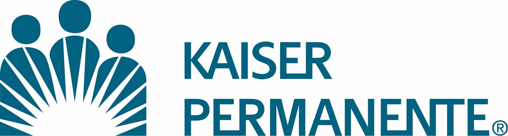

Projects
Corpay
Worked on designing and developing a Hybrid-Single Page Application using C#, .NET Framework, ASP.NET MVC, and AngularJS. Integrated RESTful APIs and participated in UI design with Master Pages in MVC 5.
Ministry of Advanced Education and Skills Training
Designed and implemented RESTful APIs and contributed to the front-end using Angular Framework. Led development efforts in an Agile environment, improving application performance and data accessibility.
JPMorgan

Developed the application with N-tier architecture and created RESTful APIs using ASP.NET MVC Framework. Integrated Identity Server with OAuth and OpenID for securing web applications.
Kaiser Permanente
Created multiple Microservices from scratch and developed RESTful APIs using ASP.NET Core with MVC Framework. Implemented build automation scripts with PowerShell and integrated them with Jenkins CI/CD pipelines.